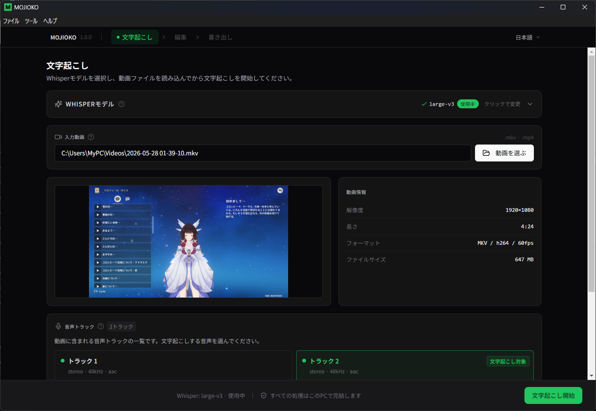
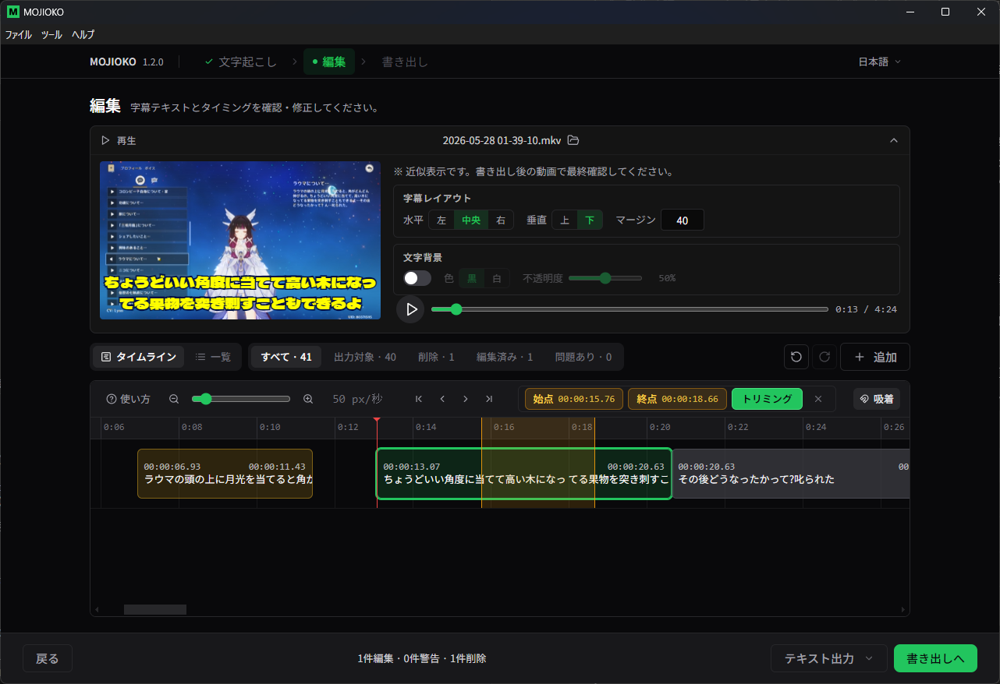
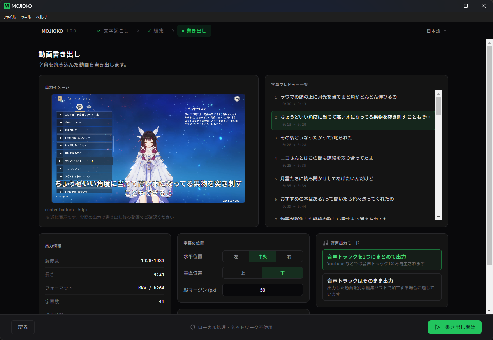

ショート動画にも対応
縦型動画の字幕制作にも
縦型動画（9:16）にも対応。MKV、MP4、MOV（iPhone 撮影動画）、AVI など様々な形式の動画を読み込み、MP4 形式で書き出し可能。TikTok、YouTube Shorts、Instagram Reels の字幕制作に活用できます。
無料の文字起こし動画作成ツール
ダウンロードWindows 11 64bit 対応 / 常に最新版が表示されます
使い方ガイド よくある質問・OBS 設定方法 不具合報告 & ご要望 ご意見・ご要望はこちら
Step 1 のスクリーンショット動画ファイルを選択し、Whisper モデルで音声を自動文字起こし。マルチトラック動画にも対応し、字幕にしたい音声トラックを選べます。

Step 2 のスクリーンショット文字起こし結果のテキストとタイミングを画面上で確認・修正。字幕の追加・削除・時間調整に加え、タイムライン上で字幕を視覚的に調整したり、不要な区間をカット（トリミング）したりが直感的に行えます。編集結果はテキストや SRT 形式で出力でき、他の動画編集ソフトでも再利用できます。

Step 3 のスクリーンショット編集したテキストを動画に焼き込んで出力可能。文字色、縁取り、フェードなどスタイルを調整できます。文字起こしから編集、書き出しまでこのアプリで完結。すべての処理は PC 内で完結します。
縦型動画（9:16）にも対応。MKV、MP4、MOV（iPhone 撮影動画）、AVI など様々な形式の動画を読み込み、MP4 形式で書き出し可能。TikTok、YouTube Shorts、Instagram Reels の字幕制作に活用できます。
MOJIOKO は無料でご利用いただけます。お役に立てましたら、開発の支援をご検討ください。
グローバル・アカウント不要・$3〜
PayPay・コンビニ・クレジットカード対応・¥300〜
月額・単発どちらも可能・GitHub アカウント必要
ローカル PC で完結するため、動画データを外部にアップロードする必要はありません。
ダウンロード 使い方ガイド よくある質問・OBS 設定方法 不具合報告 & ご要望 ご意見・ご要望はこちら